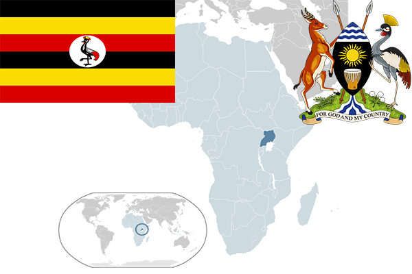

To`liq nomi: Uganda Respublikasi
Region: Sharqiy Afrika
Qonunchilik shakli: Respublika
Mustaqillik kuni: 9 oktabr 1962-yil
Poytaxt: Kampala
Maydoni: 236,040 km²
Chegaradosh davlatlari: Janubiy Sudan, Kongo, Ruanda, Tanzaniya, Keniya.
Aholisi: 34 758 809 (2013-yil)
Aholi zichligi: 119 /км²
Aholining o`rtacha yoshi: 59,17 yil
Rasmiy tili: Ingliz va Suhail tillari
Dini: Xristian
Pul birligi: Uganda shillingi
Telefon prefiksi: +256
Internet domen: .ug
Xalqaro tashkilotlarga a`zoligi: BMT
Dengiz va okeanlarga chiqishi: Viktoriya ko’li
YIM: Butun: $26.39 mlrd. (2017-yil)
Yirik shaharlari: Kampala , Nansana, Kira